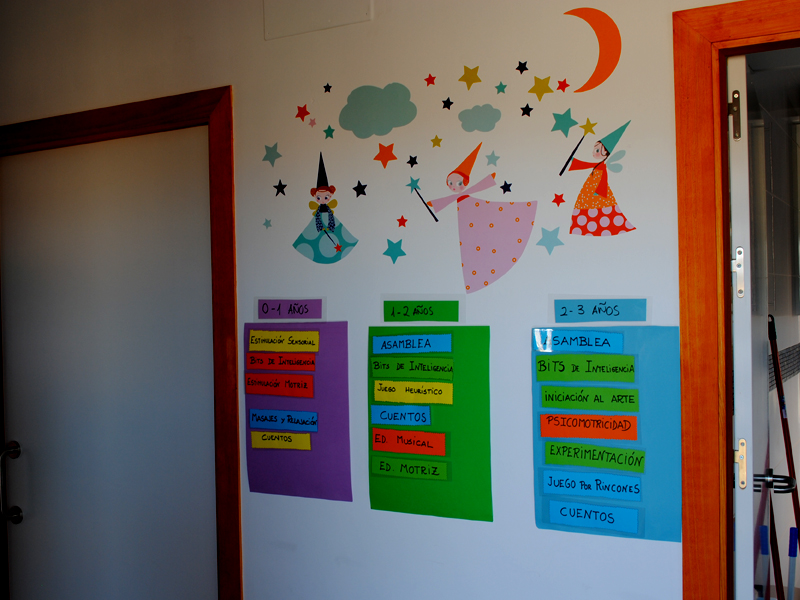
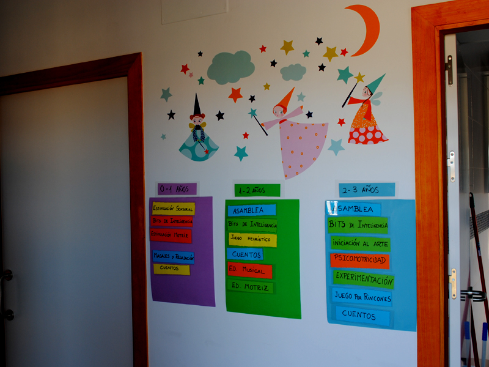
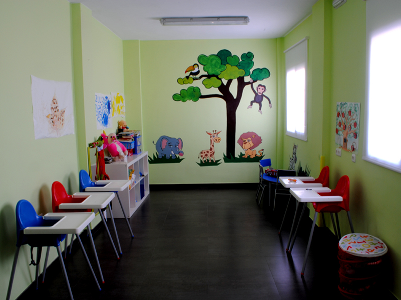
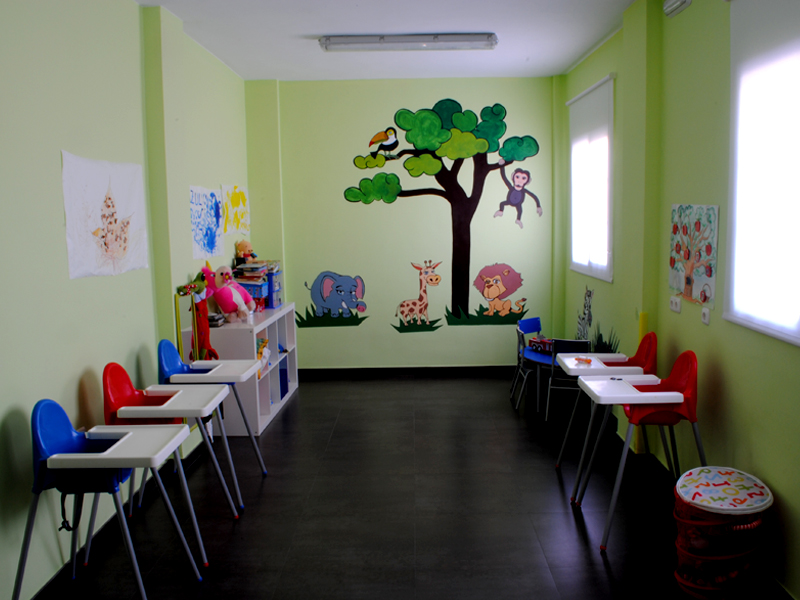

PEDOBEAR
KINDERGARTEN
Pedobear es una escuela infantil de primer ciclo autorizada por la Consejería de Educación de Andalucía con un proyecto cuyo mayor objetivo es atender, educar y cuidar con gran afecto a nuestros pequeños protagonistas, vuestros hijos. Contamos con la experiencia de un equipo de profesionales altamente cualificado e iniciamos nuestro proyecto pedagógico ofreciendo una gestión de gran calidad. Prestamos especial atención a nuestra “escuela de padres” donde trabajaremos vuestras necesidades, sugerencias e inquietudes.
Familia y Escuela no pueden actuar de manera aislada a la hora de educar. Aplicamos una pedagogía que favorece un aprendizaje de los más pequeños de forma eficaz y efectiva. Os invitamos a que conozcáis nuestro centro y esperamos poder compartir grandes y brillantes momentos con vosotros y con vuestros hijos en nuestro centro.
El concepto más importante de nuestra guardería es inculcar en cada niño el deseo de aprender haciendo que el proceso de aprendizaje sea divertido. En Pedobear, sabemos que en las primeras etapas del desarrollo infantil, muchos estudios han demostrado que el aprendizaje y la diversión se consideran iguales .
También indican que las actividades placenteras sientan las bases para el crecimiento de la educación que el niño, conforme progresa en las experiencias de la vida. Sentar una base sólida a muy temprana edad es el fundamento de la cantidad y calidad de conocimientos que son absorbidos por nuestros pequeños.
Es nuestra responsabilidad trabajar con los padres y asegurar así una base sólida para el futuro del niño puesto, que el avance físico, social e intelectual debe ser una prioridad. Cada niño es un milagro único de la naturaleza, especiales e individuales Nuestra contribución al éxito del niño en su totalidad sólo puede funcionar con la participación activa de los padres. Cada niño es un trabajo en progreso, una flor pequeña pero preciosa. La escuela de educación Infantil Pedobear tiene una meta, descubrir pasito a pasito, el potencial que reside en todos y cada uno de nuestros pequeños.
"El maestro mediocre cuenta. El maestro corriente explica. El maestro bueno demuestra. El maestro excelente inspira." - William A. Ward.
Su función más importante es hacer felices a los niños, ya que no existe nada más esencial que la sonrisa de ellos. Siendo un espacio creado para favorecer y facilitar el juego. En el cual estos miembros de la comunidad educativa van para jugar libremente con todas sus potencialidades y necesidades lúdicas. Se encontrarán con el personaje principal de la ludoteca: el juguete (objeto intermediario y cultural, motivador de nuevas conductas y motor de la creatividad).
A través del juego/juguete se pretenderá proporcionar aprendizajes , adquisición de conocimiento , desarrollo de habilidades, de forma natural y agradable, porque en la ludoteca la construcción del conocimiento es una delicada aventura, este lugar es diseñado, imaginado, soñado, para que los jóvenes, niños, adultos, puedan vivir plenamente con toda su curiosidad y entusiasmo.
Los encargados y responsables de cumplir con este objetivo son los ludotecarios o facilitadores de juego (individual y grupal), además de clasificar y catalogar juegos y juguetes, planificando animaciones lúdicas y eventos especiales de integración, es decir, que actúa facilitando el juego en lugar de dirigirlo, prestando especial atención a la creación de una atmósfera libre de fracaso y a un ambiente que estimule la creatividad, la diversión, elevando el nivel de desarrollo de la persona. Esta propuesta está dirigida a toda institución abierta a las necesidades y a los cambios, donde se trabaje para lograr que sus alumnos alcancen un equilibrio emocional, sensible e intuitivo, fortalecido para enfrentar en un futuro próximo la inserción a la sociedad.
Objetivos generales:
1- Satisfacer la necesidad de contar con un espacio lúdico, como herramienta integradora tanto del niño con el juguete y entre ellos.
2- Potenciar la utilización de la actividad lúdica como un recurso educativo y creativo en el tiempo libre.
3- Favorecer la integración y socialización (aceptación del otro), tanto en la institución como en el mundo externo
4- Favorecer y facilitar el juego.
5- Estimular la libertad y ofrecer seguridad para la acción.
6- Permitir la expresión de la creatividad.
7- Generar igualdad de oportunidades lúdicas.
8- Transmitir valores humanos.
9- Propiciar un espacio placentero, alegre, sorpresivo, curioso y vivo.
El teatro infantil forma parte de la lista de actividades extraescolares ofrecidas a los niños. Para hacer teatro no es necesario que el niño sea un artista y tenga una cualidad innata para ello, bastará con que quiera divertirse, inventar e interpretar historias, y hacer amigos.
Las clases de teatro, a través de juegos y actividades en grupo o individuales, son ideales para ayudar a los niños a desarrollar la expresión verbal y corporal, y a estimular su capacidad de memoria y su agilidad mental. También sirve para que los niños retengan diálogos y trabalenguas, mejorando y favoreciendo su dicción. Con el teatro el niño aumenta su autoestima, aprenden a respetar y convivir en grupo, conocen y controlan sus emociones, descubren lo que es la disciplina y la constancia en el trabajo, además de desenvolverse entre el público.
Las clases de teatro infantil son terapéuticas y socializadoras. Los trabajos en grupo, los ejercicios psicomotores y el contacto físico entre los compañeros es beneficioso para su educación. El teatro también puede servir para:
1- Reforzar las tareas académicas como la lectura y la literatura.
2- Ayudar en la socialización de los niños.
3- Mejorar la concentración y la atención de los niños.
4- Transmitir e inculcar valores.
5- Fomentar el uso de los sentidos de los niños.
6- Motivar el ejercicio del pensamiento.
7- Estimular la creatividad y la imaginación.
8- Ayudar a los niños a que jueguen con su fantasía.
Teatro es educación y diversión El hecho de que el niño empiece a hacer teatro no quiere decir que él se convertirá en un actor. Ellos juegan a crear, inventar y aprenden a participar y a colaborar con el grupo.
 



 

"Donde el roce hace el cariño"
Calle de la piruleta, Barrio de la gominola, Ciudad de la ilusion
698 258 213
direccionfalsa@dominiofalso.com